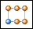
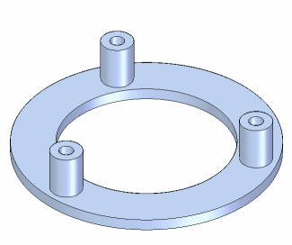
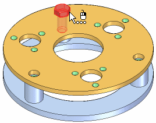
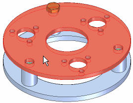
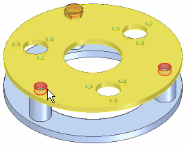
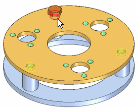
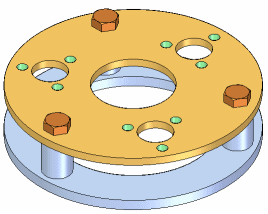
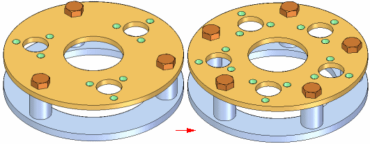
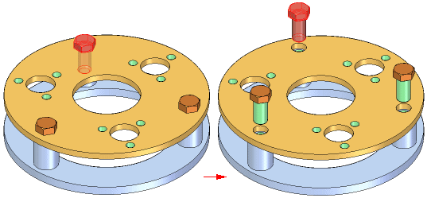
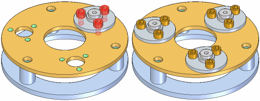

Pattern Parts command
Use the Pattern Parts command

to copy one or more assembly components into a pattern.

You can select the following types of components to define a pattern of parts:
-
Parts in the active assembly.
-
Subassemblies in the active assembly.
-
Patterns of parts in the active assembly.
The parts are not positioned using assembly relationships. They are positioned using a pattern feature in a selected part or in an assembly sketch.
Positioning the components to be patterned
Before creating a pattern of parts, you should properly position one copy of the components you want to pattern. For example, to pattern a bolt, use the Place Part command to place the bolt into one of the bolt holes in the part.

If the pattern feature on the part was constructed using the Fast Pattern option, you should position the first bolt in the parent feature of the pattern. For example, if you used a hole feature to create the part pattern, position the first bolt in the hole feature, not one of the holes in the pattern feature.
Selecting the components to be patterned
After you have positioned the components you want to pattern, use the Pattern Parts command to select them. The Select Parts step on the Pattern Parts command bar allows you to select the components you want to pattern. You can pattern multiple components in one operation. You can select parts in the active assembly, entire subassemblies, and existing patterns of parts.
Defining the pattern
After you have selected the components you want to pattern, the Define Pattern step on the command bar allows you to select the part that contains the pattern feature you want to use. You can also select an assembly or part sketch if the sketch contains a 2D pattern profile.

Next, you must select the pattern feature on the part, if the pattern is in an ordered “Smart” pattern. Otherwise, the reference element is not needed and the components will show in the preview step. The components are patterned relative to the original element in the pattern. This means the first component of the pattern should be positioned appropriately in the reference element. The part you use as a pattern reference does not have to be the part in which you positioned the original components. You can select pattern features that were constructed with the following commands:
-
Rectangular Pattern
-
Circular Pattern
-
Pattern Along Curve
-
Hole

When the pattern feature is highlighted in the assembly window, select a reference position on the pattern feature. In most cases you should select the feature into which you placed the original copy of the part to be patterned.

When you click the Finish button on the command bar, the original part is copied to each position in the pattern.

Modifying the feature pattern
If you change the design of the part containing the feature pattern, the part pattern in the assembly updates. For example, if you increase the number of holes in the feature pattern, additional bolts are added to the part pattern in the assembly.

Deleting and suppressing patterned parts
When you delete the original part in a pattern, all the patterned parts are also deleted. You cannot delete the individual Pattern Items in a pattern of parts, but you can suppress them. For example, you may have a pattern of 24 bolts where design considerations require one bolt to be shorter than the rest.
After you have placed the pattern of bolts, you can suppress the Pattern Item for that bolt in PathFinder. You can then use the Assemble command to place a shorter bolt in that location.
When you suppress a Pattern Item, the quantity value in an assembly report or a parts list in a drawing is adjusted accordingly. For example, if you suppress one Pattern Item in pattern of 24 bolts, the quantity value in the parts list would be 23 bolts.
Controlling occurrence properties of patterned parts
You can control the occurrence properties of the individual parts in a pattern of parts. When creating a pattern of parts, the parent part's occurrence properties are applied to all of the patterned parts when you set the Patterned Parts Inherit Parent Part Occurrence Properties By Default option on the Assembly Tab on the Options dialog box.
After you create a pattern of parts, you can change the occurrence properties of individual parts in the pattern. For example, you may want to hide one of the patterned parts in the drawing, but still display it in the assembly. You can select the part in PathFinder or the graphics window, then use the Occurrence Properties command on the shortcut menu to set the occurrence property Display in Drawing Views to No for that part.
The part will be displayed in the assembly and counted in an assembly report, but will be hidden in the drawing and not counted in a parts list in the drawing.
Replacing patterned parts
You can use the Replace Part command to replace the original part, but not the patterned parts. When you replace the original part, all the patterned parts are also replaced.
Patterned parts and assembly relationships
Although the parts in a pattern are not positioned using assembly relationships, they do change position if a relationship controlling the original part is modified. For example, if you edit the offset value of the original part, all the patterned parts also update.

Defining patterns productively
You can create patterns of parts that contain part patterns you defined earlier. For example, you can create a part pattern of socket head screws, then use that part pattern to construct another pattern.

Assembly patterns and alternate assemblies
The Pattern Parts command is available when the Apply Edits to All Members option on the Family of Assemblies tab is set (you are working globally) or cleared (you are working locally).
You can only modify the inputs for a pattern of parts when the Apply Edits to All Members option is set (you are working globally). For example, if an assembly pattern of parts originally included a bolt and nut, you cannot modify the pattern to add a washer to the pattern unless you are working globally.
For more information, see the Alternate Assemblies Impact on Solid Edge Functionality Help topic.
How do I
Build a pattern of parts in an assemblyDrop an assembly pattern
Mirror components in an assembly
Copy and paste assembly components
Learn more
Pattern, mirror, and copy components in assembliesLook up more details
Pattern Parts command barDuplicate Component command
Pattern Parts command bar
Drop Pattern command
Remove Override Body command
Mirror Components command
Mirror Components command bar (Assembly)
Mirror component options (Assembly)
Pattern Along Curve (assembly)
Related Topics
Along Curve pattern parts command (assembly)Along Curve pattern features command (assembly)